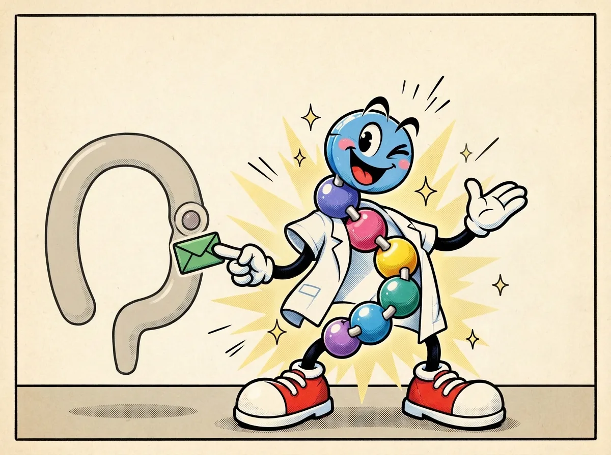
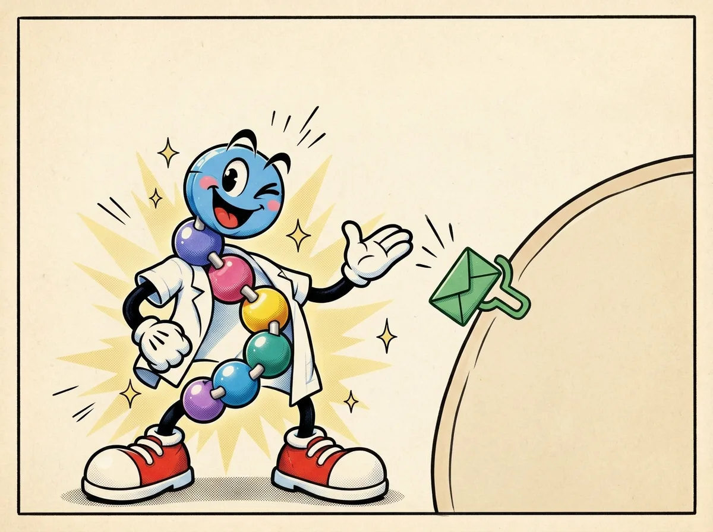

The GLP-1 message
Trace an introductory GLP-1 message from intestinal L cells to a cell-surface receptor, and separate its brief lifetime from its glucose-dependent insulin effect.


What the comic means
The clean version
After a meal, cells in the gut release GLP-1. It is a peptide hormone whose signal can help insulin-producing beta cells respond when glucose is elevated. The body-made signal is short-lived. This describes a hormone, not a medicine. [1][2]
One level deeper
Intestinal enteroendocrine L cells release GLP-1, an incretin derived from proglucagon. It acts through the GLP-1 receptor, including on pancreatic beta cells, and its insulin-enhancing effect is glucose-dependent. Native GLP-1 is rapidly degraded in part by DPP-4, with clearance further limiting its time in circulation. Those are separate facts: rapid clearance does not cause the glucose-dependence. [1][2]
Mechanism lens
Mechanism entry point: proglucagon processing differs by tissue, and GLP-1R is a cell-surface G-protein-coupled receptor. Receptor activation and insulin secretion must be interpreted in the context of glucose concentration, cell state and other signals. DPP-4 cleavage changes the native peptide's activity, while clearance limits exposure. The images do not encode receptor structure, ligand sequence, signaling kinetics or a quantitative response curve. [2]
Beads aren't biology.
Peppy is a generic mascot, not the molecular structure of GLP-1. The green envelope is an invented symbol, not the actual ligand. Receptors are distributed in multiple tissues, and one cartoon cell cannot represent the complete physiology. Native GLP-1 and a manufactured receptor-agonist drug are not interchangeable categories.
Check your understanding
If GLP-1 is cleared quickly, does that fact by itself explain why its insulin effect depends on glucose?
Reveal answer
No. Its short lifetime and glucose-dependent insulin effect are distinct observations. One does not establish the mechanism of the other.
Check the science
- NIDDK — How GLP-1 research led to medicines — Gut origin, glucose-related insulin response and brief native signal
- Müller et al., Molecular Metabolism — Glucagon-like peptide 1 (GLP-1) — Incretin biology, GLP-1R, DPP-4 degradation and clearance
Sources support the biology; comic poses and colored beads are illustrative. Educational content is not medical advice.